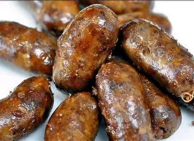
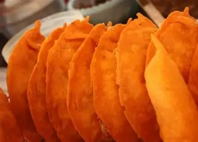
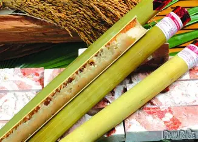
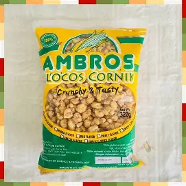
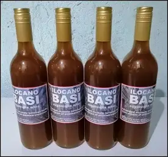
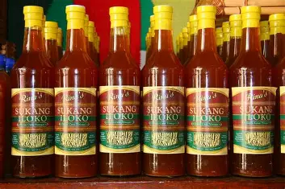
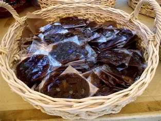
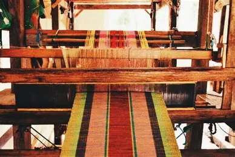

Tourist spots, adventures, and local products await you!
A heritage street in Vigan lined with Spanish-era houses. It shows the history of the Philippines during the colonial period.
#Heritage #Vigan #CalleCrisologo #Culture #History
A historical watchtower in Bantay, Ilocos Sur, offerin scenic views of the province.
#Bantay #BellTower #IlocosSur #Scenery #Adenture
Famous for its long white sand beaches and clear waters, perfect for swimming and relaxation.
#BeachLife #Sabangan #Ilocos #Travel #Relax

Longganisa, the succulent Filipino sausage, has a captivating history that dates back centuries. To understand its origins, we must explore the early influences on Philippine cuisine, the significant Spanish influence that led to its creation, and the diverse regional variations that contribute to the array of longganisa styles enjoyed today.
180Php
Bagnet is a deep fried crispy pork belly dish that is similar to lechon kawali. It originated from Ilocos and is considered to be a top favorite among Filipinos.
350Php

Vigan empanada is similar to a taco shell when fried to a crisp with vegetable like grated papaya or bean sprouts and meat filling inside. It is also added with raw egg in the center and will cook together with the empanada when fried.
60Php
Chicharon is a popular Filipino snack made from deep-fried pork rinds or other meats, known for its crispy, airy texture and bold flavor. It is often enjoyed as a pulutan, or food enjoyed with alcoholic drinks, due to its rich, salty taste that pairs well with cold beverages. Chicharon is made by frying pork skin until it becomes crispy and crunchy, then served with various toppings such as salsa verde, pickled onions, jalapeños, and cilantro.
100Php

Tinubong is a traditional Filipino delicacy from the Ilocos region, known for its unique preparation method involving bamboo tubes.
120Php
Royal Bibingka is a traditional Filipino rice cake from Vigan, Ilocos Sur, known for its chewy texture and cheesy topping. It is made from glutinous rice flour, coconut milk, eggs, and sugar, and is often served during the Christmas season. The cake is slightly sweet and has a density similar to cassava cake, making it a delightful treat for those who enjoy sticky rice cakes. Royal Bibingka is not only a popular dessert but also a comforting food that evokes nostalgia and a sense of homecoming for many Filipinos.
4500Php

Cornick, also known as kornik, is a Filipino deep-fried crunchy puffed corn nut snack. It is most commonly garlic-flavored but can come in a variety of other flavors.
80Php

Basi is a traditional fermented alcoholic beverage made from sugarcane in the Philippines, with an alcohol content ranging from 10-16%. It is produced by fermenting boiled sugarcane juice using a natural starter called gamú, which includes various plant ingredients. Basi is known for its distinct flavor profiles and is often consumed in various cultural celebrations, reflecting the Ilocano heritage. It is the only kind of table wine in the world, processed and aged in earthen jars, and has been a significant part of the local economy since before Spanish colonization.
250Php

Sukang Iloko is a traditional Ilocano vinegar made from fermented sugarcane juice, known for its strong, acidic scent, and distinctive turbid color. It is a staple in Ilocano cuisine, used as a condiment and preservative for various dishes. The vinegar is produced in burnay jars and is characterized by its blend of strength, sourness, and sweetness. It is a symbol of Filipino resilience and creativity, and is available in various flavors and variants, including spicy and turmeric-infused options.
50Php

Calamay is a sticky sweet delicacy popular in the Philippines, particularly in Bohol. It is made from coconut milk, brown sugar, and ground glutinous rice. The preparation involves extracting coconut milk from grated coconuts, adding glutinous rice, and boiling the mixture to create a thick, sweet paste. Calamay can be flavored with ingredients like margarine, peanut butter, or vanilla and is often served chilled for a less runny consistency. It is a traditional pasalubong and is used as a sweetener in various Filipino desserts and beverages.
150Php

Inabel, also known as Abél or Abél-Ilóco, is a traditional handwoven fabric from the Ilocos region of the Philippines. It is revered for its intricate designs, durability, and cultural significance. The art of Inabel weaving has deep roots in the Ilocano culture, not only as a craft but also as a way of life. Inabel fabrics were originally used to make blankets, shawls, and traditional garments such as the baro't saya and camisa de chino. The designs often feature motifs inspired by nature, such as flowers, plants, and animals, as well as geometric patterns passed down through generations. The traditional process of weaving Inabel involves using a tillar, a traditional wooden handloom weaving machine, and employing different design techniques. Each province in the Ilocos region has its own distinct pattern design style, contributing to the rich tapestry of Inabel weaving.
500Php
The Burnay Jar, also known as Pagburnayan, is a traditional earthenware pot from Vigan, Philippines. These jars are handcrafted from locally-sourced clay and fine sand, and they are known for their durability and ability to ferment food and beverages. The process of making a Burnay Jar involves combining clay with fine sand, kneading it, and then forming it into a jar using a pottery wheel. These jars are used for storing food, fermenting basi (sugarcane wine), and serving as souvenirs. The craftsmanship involved in creating Burnay Jars is a testament to the rich cultural heritage of the Ilocano people.
800Php